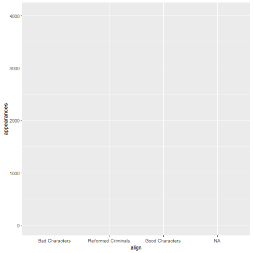
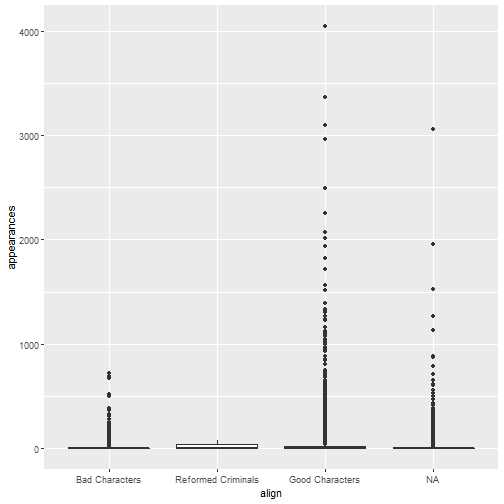
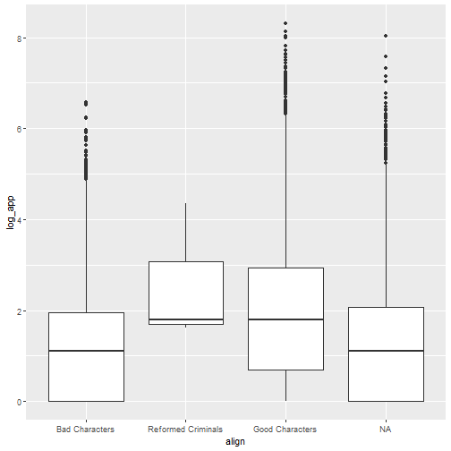
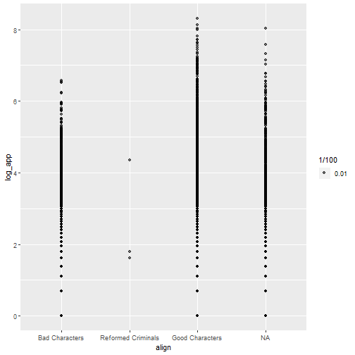
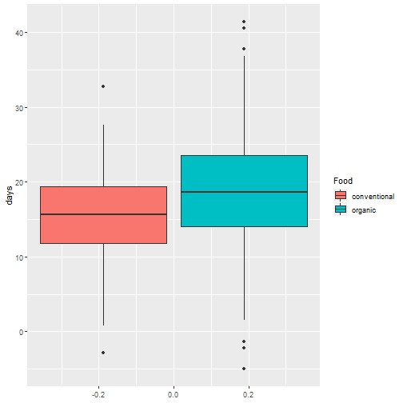
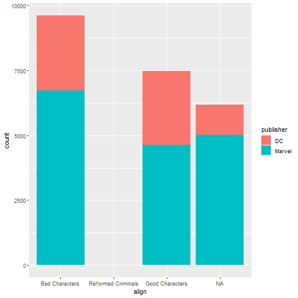
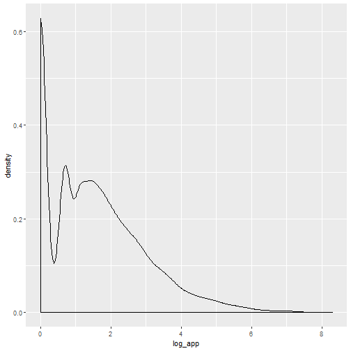
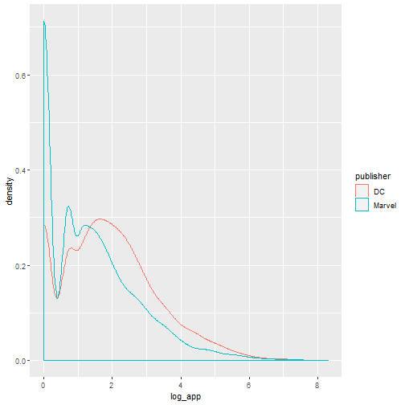

Summarization of Data
Adam J Sullivan
Assistant Professor of Biostatistics
Brown University
ggplot2
Appropriate graphical analysis may make the conclusions so clearcut that detailed specific analysis is unnecessary
-- David Cox (1978)
ggplot2
- We will begin our journey into statistical graphics with the package
ggplot2. - This is a package by Hadley Wickham and is part of the tidyverse.
- It is a very comprehensive and easily adaptable language of graphics.
What can't ggplot2 do?
- A good place to start might be with what
ggplot2cannot do:- 3d graphs.
- Interactive graphs, use
ggvis - DAGs, see
igraph
- We will now focus on all the things it can do.
ggplot2 components
ggplot2is built off the grammar of graphics with a very intuitive structure.- The base graphics built into R require the use of many different functions and each of them seem to have their own method for how to use them.
ggplot2will be more fluid and the more you learn about it the more amazing of graphics you can create.
ggplot2 components
- We will get started with the components of every
ggplot2object:- data
- aesthetic mappings between variables in the data and visual properties.
- At least one layer which describes how to render the data.
- Many of these are with the
geom_foo()function.
ggplot() Basics
- We will begin with a basic graph of appearances by alignment
library(ggplot2)
library(fivethirtyeight)
ggplot(data=comic_characters, aes(x=align, y=appearances))
ggplot() Basics

ggplot() Statement
- We can see that all we have is the basic layout of axis.
- The data and aes gives us the basic layout.
- We need
geom_foo()to make a proper graph.
geom_point() Statement
- We can add
geom_point()to this:
ggplot(data=comic_characters, aes(x=align, y=appearances)) +
geom_point()
geom_point() Statement

Other graphs
- This graph is not the best use for out data.
- We could try boxplots instead:
ggplot(data=comic_characters, aes(x=align, y=appearances)) +
geom_boxplot()
Other graphs

Quick Transformation
- We may be having a hard time seeing this due to the outliers in the data.
- We can try a log transform.
- The code below will do this
- By the end of today you will understand this code
comic_characters <- comic_characters %>%
mutate(log_app = log(appearances))
Boxplots Again

Bar Graphs
- We could then consider simple bar graphs
- For example if we wanted to know how many characters of each type there were:
ggplot(data=comic_characters, aes(x=align)) +
geom_bar()
- Note: With bar graphs we only need the x-axis.
Bar Graphs

Basic Template
ggplot(data= <DATA>, aes(x=<X-VARIABLE>, y=<Y-VARIABLE>)) +
<GEOM_FUNCTION>()
Aesthetics
Aesthetics
- The basic aesthetics are mapping the data to the x and y axis.
- We can also add:
alpha: makes points transparent to see overlaps betterfill: Fills objects with colorcolor: Changes color of points or lines.shape: Changes spape of points
Aesthetics: alpha
ggplot(data=comic_characters, aes(x=align, y=log_app)) +
geom_point(aes(alpha=1/100))
Aesthetics: alpha

Aesthetics: alpha
- It can be hard to see the transparency when they are so close.
- We can set the transparency to a variable
On Your Own: RStudio Practice
- Set
alpha=year - How does this change things?
On Your Own: RStudio Practice
Your end result should be:

Aesthetics: color
- We can easily change the color of points and lines using
color
ggplot(data=comic_characters, aes(x=align, y=log_app)) +
geom_point(aes(color=publisher))
Aesthetics: color

On Your Own: RStudio Practice
- Set
color="blue" - How does this change things?
Aesthetics: shapes
- We can change the shape of points based on different variables.
ggplot(data=comic_characters, aes(x=align, y=log_app)) +
geom_point(aes(shape=publisher))
Aesthetics: shapes

On Your Own: RStudio Practice
- Try using both shape and color.
- How does this add dimensionality to the graph?
Aesthetics: fill
- We can fill objects with color as well
ggplot(data=comic_characters, aes(x=align)) +
geom_bar(aes(fill="blue"))
Aesthetics: fill
- This doesnt have the same effect as
color

Aesthetics: fill
- We can use other variables to add dimensionality
ggplot(data=comic_characters, aes(x=align)) +
geom_bar(aes(fill=publisher))
Aesthetics: fill

Geoms
Geoms
- There are many
geom_foo()functions we can use. - The Cheatsheet on
ggplot()is a good place to start for more.
Other Plots: Density
ggplot(data=comic_characters, aes(x=log_app)) +
geom_density()
Other Plots: Density

Other Plots: Density
ggplot(data=comic_characters, aes(x=log_app)) +
geom_density(aes(color=publisher))
Other Plots: Density

Other Plots: Histogram
ggplot(data=comic_characters, aes(x=log_app)) +
geom_histogram(aes(fill=publisher))
Other Plots: Histogram

More Complicated
- Let's say that we wish to see how the number of characters introduced each year change by:
- year
- gender
- publisher
- We could do this with dplyr and ggplot.
Counting
- We first need to count this:
gender_year <- comic_characters %>%
group_by(year, gender, publisher) %>%
tally()
What do we have?
gender_year
## # A tibble: 457 x 4
## # Groups: year, gender [?]
## year gender publisher n
## <int> <chr> <chr> <int>
## 1 1935 Male Characters DC 1
## 2 1936 Female Characters DC 2
## 3 1936 Male Characters DC 7
## 4 1937 Female Characters DC 1
## 5 1937 Male Characters DC 3
## 6 1938 Female Characters DC 1
## 7 1938 Male Characters DC 9
## 8 1939 Female Characters DC 5
## 9 1939 Female Characters Marvel 10
## 10 1939 Male Characters DC 13
## # ... with 447 more rows
The plot: All publishers together
ggplot(gender_year, aes(x=year, y=n, color=gender)) +
geom_line()
The plot: All publishers together
Graph by Publisher
ggplot(gender_year, aes(x=year, y=n, color=gender)) +
geom_line() +
facet_wrap(~publisher)
Graph by Publisher
What can we see?
- Hard to see genders other than male or female.
- Marvel shows another category but that is
NA. - We need to remove male and female in order to see more distinction in other genders.
Removing certain Genders
gender_year_subset <- comic_characters %>%
group_by(year, gender, publisher) %>%
filter(gender != "Female Characters" & gender != "Male Characters") %>%
tally()
ggplot(gender_year_subset, aes(x=year, y=n, color=gender)) +
geom_line() +
facet_wrap(~publisher)